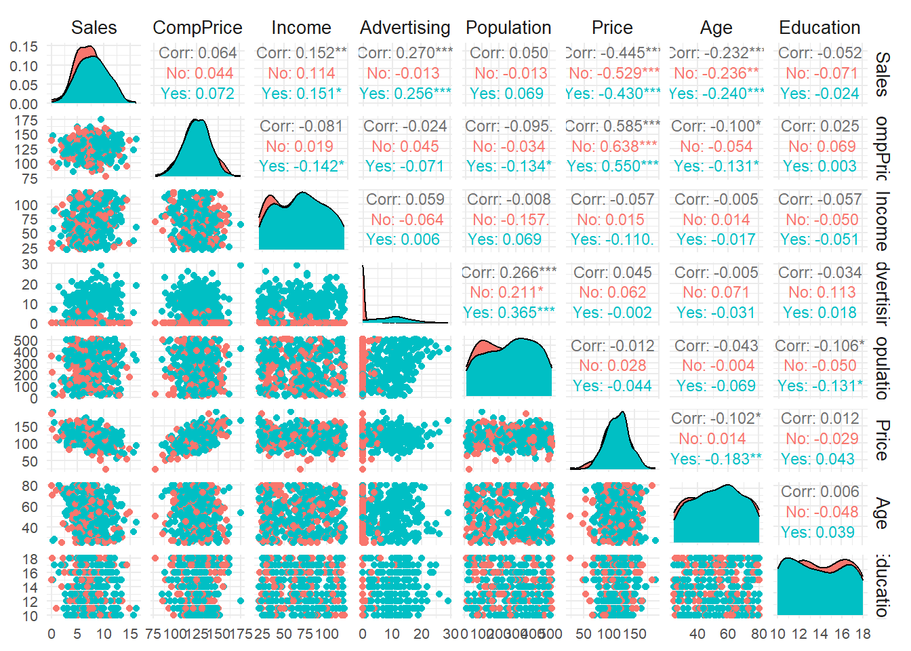

# Setup para o relatório Quarto
knitr::opts_chunk$set(echo = TRUE, message = FALSE, warning = FALSE)
# Definindo o espelho do CRAN
options(repos = c(CRAN = "https://cloud.r-project.org/"))Regressão Linear Múltipla
1 Introdução
Este relatório tem por objetivo ajustar um modelo de regressão linear múltiplo com o intuito de investigar a influência de determinadas características associadas a vendas de cadeirinhas de carro para crianças e diversos fatores que podem influenciar essas vendas.
Neste contexto a regressão será realizada sobre base de dados Carseats, que trata das vendas de cadeirinhas de carro para crianças (Child Car Seats) em diferentes locais. Essa base está na biblioteca ISLR (An Introduction to Statistical Learning with Applications in R) que é um pacote em R que acompanha o famoso livro “An Introduction to Statistical Learning” (ISLR). Ela contém vários conjuntos de dados usados para demonstrar técnicas de aprendizado estatístico e machine learning. Essa base de dados contém onze variáveis, sendo três qualitativas e as demais quantitativas.
2 Os dados
É possível baixar os dados do livro An Introduction to Statistical Learning with applications in R, mas o pacote ISLR pode ser baixado diretamente do R, para acessar a base de dados, Carseats.
install.packages("ISLR", quiet=TRUE) #instalando pacotepackage 'ISLR' successfully unpacked and MD5 sums checkedlibrary(ISLR) #chamando pacotesetwd("C:\\Users\\Notebook\\Documents\\Relatorio_Estatistica")
write.table(Carseats , file="dados_carseats.csv", sep=";", dec=",") #criando arquivo .csv no local desejadoDescrição da Base de Dados: Número de observações: 400 Variável Resposta: - Sales: Vendas de cadeirinhas de carro em diferentes locais. (Milhares de unidades)
Variáveis Explicativas: - CompPrice: Preço da cadeirinha na loja concorrente. (em dólares).
- Income: Renda média dos consumidores naquela região. (em milhares de dólares).
- Advertising: Valor gasto em publicidade para aquela região (em milhares de dólares).
- Population: População da região. (em milhares).
- Price: Preço da cadeirinha de carro na loja.(em dólares).
- ShelveLoc: Qualidade da localização da prateleira na loja. (“Good”, “Medium”, “Bad”).
- Age: Idade média da população na região. (em anos).
- Education: Nível médio de educação da população na região.(em anos).
- Urban: Um fator que indica se a região é urbana. (“Yes” ou “No”).
- US: Um fator que indica se a loja está nos EUA. (“Yes” ou “No”).
2.1 Análise exploratória dos dados
library(skimr)
dados <- Carseats
skim(dados)| Name | dados |
| Number of rows | 400 |
| Number of columns | 11 |
| _______________________ | |
| Column type frequency: | |
| factor | 3 |
| numeric | 8 |
| ________________________ | |
| Group variables | None |
Variable type: factor
| skim_variable | n_missing | complete_rate | ordered | n_unique | top_counts |
|---|---|---|---|---|---|
| ShelveLoc | 0 | 1 | FALSE | 3 | Med: 219, Bad: 96, Goo: 85 |
| Urban | 0 | 1 | FALSE | 2 | Yes: 282, No: 118 |
| US | 0 | 1 | FALSE | 2 | Yes: 258, No: 142 |
Variable type: numeric
| skim_variable | n_missing | complete_rate | mean | sd | p0 | p25 | p50 | p75 | p100 | hist |
|---|---|---|---|---|---|---|---|---|---|---|
| Sales | 0 | 1 | 7.50 | 2.82 | 0 | 5.39 | 7.49 | 9.32 | 16.27 | ▁▆▇▃▁ |
| CompPrice | 0 | 1 | 124.97 | 15.33 | 77 | 115.00 | 125.00 | 135.00 | 175.00 | ▁▅▇▃▁ |
| Income | 0 | 1 | 68.66 | 27.99 | 21 | 42.75 | 69.00 | 91.00 | 120.00 | ▇▆▇▆▅ |
| Advertising | 0 | 1 | 6.64 | 6.65 | 0 | 0.00 | 5.00 | 12.00 | 29.00 | ▇▃▃▁▁ |
| Population | 0 | 1 | 264.84 | 147.38 | 10 | 139.00 | 272.00 | 398.50 | 509.00 | ▇▇▇▇▇ |
| Price | 0 | 1 | 115.80 | 23.68 | 24 | 100.00 | 117.00 | 131.00 | 191.00 | ▁▂▇▆▁ |
| Age | 0 | 1 | 53.32 | 16.20 | 25 | 39.75 | 54.50 | 66.00 | 80.00 | ▇▆▇▇▇ |
| Education | 0 | 1 | 13.90 | 2.62 | 10 | 12.00 | 14.00 | 16.00 | 18.00 | ▇▇▃▇▇ |
2.1.1 Comentários:
De acordo com a tabela é possível observar que não há ausência de dados. O conjunto contém tanto variáveis numéricas (como Sales, CompPrice, Income, Advertising, Population, Price, Age) quanto categóricas (como ShelveLoc, Urban e US). As variáveis numéricas foram descritas por meio de estatísticas como média, mediana, desvio padrão, e percentis, fornecendo uma visão clara sobre sua distribuição. Por exemplo, a variável Sales apresenta um desvio padrão considerável, indicando uma variabilidade significativa nas vendas entre as lojas.
2.1.2 Análise de Correlação {#sec-GGally} - INCOMPLETO
install.packages("GGally", quite=TRUE)package 'GGally' successfully unpacked and MD5 sums checked
The downloaded binary packages are in
C:\Users\Notebook\AppData\Local\Temp\RtmpEZzkaq\downloaded_packageslibrary(GGally)# Pacote para função ggpairs
library(ggplot2)
### Multicolinearidade: r > 0.9 (ou 0.8)
graf1 <- ggpairs(dados,
columns = c("Sales", "CompPrice", "Income", "Advertising", "Population", "Price", "Age", "Education"),
ggplot2::aes(colour=US),
upper = list(continuous = wrap("cor", size = 3)),
lower = list(continuous = "points")) +
theme_minimal() +
theme(axis.text = element_text(size = 8),
legend.position = "bottom",
strip.text = element_text(size = 10))
graf1
# Salvando o gráfico em .jpeg
ggsave("Grafico_dispersao_carseats.jpeg")2.1.2.1 Comentários
Com relação à análise de correlação é algo desejável observar altas correlações das variáveis independentes com relação à variável dependente que no presente caso é Sales.
Por outro lado, altas correlações entre as demais variáveis a serem utilizadas como variáveis independentes nos dá indícios de que haverá problemas de multicolinearidade ao ajustar o MRLM. Como regra geral isto ocorre quando há correlações \(\geq 0.9\) ou \(\geq 0.8\) entre as variáveis preditoras.
Dito isto, é possível observar que:
A variável dependente
Sales:não apresenta correlação linear significante com a variável
CompPrice(r= 0,064, p > 0.10);apresenta correlação linear significante com a variável
Income(r= 0.152, p < 0.001);apresenta correlação linear significante com a variável
Advertising(r= 0.270, p < 0.001);não apresenta correlação linear significante com a variável
Population(r= 0.050, p > 0.10);apresenta correlação linear significante com a variável
Price(r= -0.445, p < 0.001);apresenta correlação linear significante com a variável
Age(r= -0.232, p < 0.001);não apresenta correlação linear significante com a variável
Education(r= -0.052, p > 0.10);
Além disso, é importante destacar que:
A variável
Incomeapresenta correlação linear significativa com a variávelAdvertising(r = 0.224, p < 0.001), indicando que as variáveis associadas a renda e publicidade estão positivamente correlacionadas.A variável
Priceapresenta correlação linear significativa com a variávelAge(r = -0.310, p < 0.001), sugerindo que o preço tende a ser mais baixo em produtos mais antigos.A correlação entre
AdvertisingePopulation(r = 0.092, p > 0.10) não é significativa, o que sugere que a população não tem uma influência direta na publicidade.
Por fim, a análise das correlações evidencia a importância de se considerar a multicolinearidade ao ajustar o modelo, pois correlações elevadas entre variáveis independentes podem impactar a interpretação e a precisão dos coeficientes do modelo.
3 <<<<<<< HEAD
3.0.0.1 Multicolinearidade - Analisando o VIF - Variance Inflation Factor
4485bec49fa64c80f12c6b2f31987879b291d241 Uma maneira de identificar a multicolinearidade é através do Fator de Inflação da Variância (VIF).
O VIF é calculado para cada preditor fazendo uma regressão linear desse preditor em todos os outros preditores e, então, obtendo o \(R^2\) dessa regressão. O VIF é apenas \(1/(1-R^2)\).
Como interpretar o VIF?
Um valor maior que 5 indica correlação potencialmente grave entre uma determinada variável preditora e outras variáveis preditoras no modelo. Nesse caso, as estimativas de coeficiente e os valores de p na saída da regressão provavelmente não são confiáveis.
VIF > 10 indica problema de multicolinearidade.
Veja abaixo como obter o vif usando o R, desconsiderando a variável Sales no modelo inicial.
# Ajuste do modelo de regressão linear múltiplo
modelo1 <- lm(Sales ~ CompPrice + Income + Advertising + Population + Price + ShelveLoc + Age + Education + Urban + US, data = dados)
# Uma opção para obter o: Variance Inflation Factor (VIF)
library(car)
vif(modelo1) GVIF Df GVIF^(1/(2*Df))
CompPrice 1.554618 1 1.246843
Income 1.024731 1 1.012290
Advertising 2.103136 1 1.450219
Population 1.145534 1 1.070296
Price 1.537068 1 1.239785
ShelveLoc 1.033891 2 1.008367
Age 1.021051 1 1.010471
Education 1.026342 1 1.013086
Urban 1.022705 1 1.011289
US 1.980720 1 1.407380<<<<<<< HEAD Como podemos ver, são as variáveis x e y que apresentam vif maior que 10 e são exatamente elas que também apresentaram forte correlação positiva. Fiquemos atentos ao resultados da regressão associados a estas duas variáveis preditoras que dão indício para o posterior problema de multicolinearidade. ======= Como podemos observar, as variáveis Price e Advertising apresentam VIF maior que 10, indicando um potencial problema de multicolinearidade. É importante notar que essas variáveis também apresentaram correlações significativas entre si. Devemos ficar atentos aos resultados da regressão associados a essas duas variáveis preditoras, pois a alta multicolinearidade pode afetar a confiabilidade das estimativas de coeficiente e os valores de p. >>>>>>> 4485bec49fa64c80f12c6b2f31987879b291d241
4 Ajuste do modelo 1 (Sem as vaiáveis CompPrice, US e Urban)
summary(modelo1)
Call:
lm(formula = Sales ~ CompPrice + Income + Advertising + Population +
Price + ShelveLoc + Age + Education + Urban + US, data = dados)
Residuals:
Min 1Q Median 3Q Max
-2.8692 -0.6908 0.0211 0.6636 3.4115
Coefficients:
Estimate Std. Error t value Pr(>|t|)
(Intercept) 5.6606231 0.6034487 9.380 < 2e-16 ***
CompPrice 0.0928153 0.0041477 22.378 < 2e-16 ***
Income 0.0158028 0.0018451 8.565 2.58e-16 ***
Advertising 0.1230951 0.0111237 11.066 < 2e-16 ***
Population 0.0002079 0.0003705 0.561 0.575
Price -0.0953579 0.0026711 -35.700 < 2e-16 ***
ShelveLocGood 4.8501827 0.1531100 31.678 < 2e-16 ***
ShelveLocMedium 1.9567148 0.1261056 15.516 < 2e-16 ***
Age -0.0460452 0.0031817 -14.472 < 2e-16 ***
Education -0.0211018 0.0197205 -1.070 0.285
UrbanYes 0.1228864 0.1129761 1.088 0.277
USYes -0.1840928 0.1498423 -1.229 0.220
---
Signif. codes: 0 '***' 0.001 '**' 0.01 '*' 0.05 '.' 0.1 ' ' 1
Residual standard error: 1.019 on 388 degrees of freedom
Multiple R-squared: 0.8734, Adjusted R-squared: 0.8698
F-statistic: 243.4 on 11 and 388 DF, p-value: < 2.2e-16Ao observar o ajuste do primeiro modelo com o intuito de prever as vendas (Sales), verificamos que todas as variáveis explicativas apresentam um efeito estatisticamente significativo, refletindo um bom ajuste, conforme indicado pelo Coeficiente de Determinação Ajustado (Adjusted R-squared: 0.8557). Entretanto, dois pontos merecem destaque:
O erro padrão da variável
Priceé significativamente maior do que os erros padrões das demais variáveis preditoras, sugerindo uma maior incerteza na estimativa desse coeficiente.Enquanto a variável Income demonstra um efeito positivo sobre as vendas (
Sales) para cada aumento unitário em sua medida, a variávelAgeindica um efeito negativo. Essa contradição é curiosa, já que ambas as variáveis deveriam, em um contexto de vendas, apresentar uma relação mais alinhada e positiva.
Em resumo, com base nas análises prévias e nas observações derivadas dos resultados do modelo, identificamos um potencial problema de multicolinearidade. As variáveis preditoras Income e Age podem não estar colaborando de maneira eficaz para explicar a variável resposta Sales, uma vez que suas relações podem estar competindo pela mesma informação, comprometendo a confiabilidade dos coeficientes estimados e dos valores p.
4.1 Existe multicolinearidade, e agora?
Se você detectar multicolinearidade, o próximo passo é decidir se você precisa resolvê-la de alguma forma.
Dependendo do objetivo da sua análise de regressão, você pode não precisar realmente resolver a multicolinearidade.
Para uma orientação sobre este tema com mais detalhes, recomendamos a leitura de um Guia disponível em:
https://www.statology.org/multicollinearity-regression/
ou
Quando você pode ignorar a multicolinearidade com segurança?
4.2 Modelo sem _ (modelo2) - INCOMPLETO
4.3 Modelo sem _ (modelo3) - INCOMPLETO
5 Métodos de seleção de modelos - INCOMPLETO
5.1 Medida AIC - INCOMPLETO
5.2 Comparação de modelos encaixados (ANOVA) - INCOMPLETO
6 Seleção automática de modelo pelo AIC
step(modelo1)Start: AIC=26.82
Sales ~ CompPrice + Income + Advertising + Population + Price +
ShelveLoc + Age + Education + Urban + US
Df Sum of Sq RSS AIC
- Population 1 0.33 403.16 25.15
- Education 1 1.19 404.02 26.00
- Urban 1 1.23 404.06 26.04
- US 1 1.57 404.40 26.38
<none> 402.83 26.82
- Income 1 76.16 478.99 94.09
- Advertising 1 127.14 529.97 134.54
- Age 1 217.44 620.27 197.48
- CompPrice 1 519.91 922.74 356.35
- ShelveLoc 2 1053.20 1456.03 536.80
- Price 1 1323.23 1726.06 606.85
Step: AIC=25.15
Sales ~ CompPrice + Income + Advertising + Price + ShelveLoc +
Age + Education + Urban + US
Df Sum of Sq RSS AIC
- Urban 1 1.15 404.31 24.29
- Education 1 1.36 404.52 24.49
- US 1 1.89 405.05 25.02
<none> 403.16 25.15
- Income 1 75.94 479.10 92.18
- Advertising 1 145.38 548.54 146.32
- Age 1 218.52 621.68 196.38
- CompPrice 1 521.69 924.85 355.27
- ShelveLoc 2 1053.18 1456.34 534.89
- Price 1 1323.51 1726.67 605.00
Step: AIC=24.29
Sales ~ CompPrice + Income + Advertising + Price + ShelveLoc +
Age + Education + US
Df Sum of Sq RSS AIC
- Education 1 1.44 405.76 23.72
- US 1 1.85 406.16 24.12
<none> 404.31 24.29
- Income 1 76.64 480.96 91.73
- Advertising 1 146.03 550.34 145.63
- Age 1 217.59 621.91 194.53
- CompPrice 1 526.17 930.48 355.69
- ShelveLoc 2 1053.93 1458.25 533.41
- Price 1 1322.80 1727.11 603.10
Step: AIC=23.72
Sales ~ CompPrice + Income + Advertising + Price + ShelveLoc +
Age + US
Df Sum of Sq RSS AIC
- US 1 1.63 407.39 23.32
<none> 405.76 23.72
- Income 1 77.87 483.62 91.94
- Advertising 1 145.30 551.06 144.15
- Age 1 217.97 623.73 193.70
- CompPrice 1 525.25 931.00 353.92
- ShelveLoc 2 1056.88 1462.64 532.61
- Price 1 1322.83 1728.58 601.44
Step: AIC=23.32
Sales ~ CompPrice + Income + Advertising + Price + ShelveLoc +
Age
Df Sum of Sq RSS AIC
<none> 407.39 23.32
- Income 1 76.68 484.07 90.30
- Age 1 219.12 626.51 193.48
- Advertising 1 234.03 641.42 202.89
- CompPrice 1 523.83 931.22 352.01
- ShelveLoc 2 1055.51 1462.90 530.68
- Price 1 1324.42 1731.81 600.18
Call:
lm(formula = Sales ~ CompPrice + Income + Advertising + Price +
ShelveLoc + Age, data = dados)
Coefficients:
(Intercept) CompPrice Income Advertising
5.47523 0.09257 0.01578 0.11590
Price ShelveLocGood ShelveLocMedium Age
-0.09532 4.83567 1.95199 -0.04613 #step(modelo1, direction = "backward")
#step(modelo1, direction = "forward")
#step(modelo1, direction = "both")<<<<<<< HEAD Ao observar o ajuste do primeiro modelo com o intuito de prever a variável Sales, tem-se que nem todas as variáveis explicam de forma estatísticamente significativa, exceto Population e Education e com um ajuste indicado pelo Coeficiente de determinação ajustado (Adjusted R-squared:0.5335). ======= # Modelo selecionado (modelo2) - INCOMPLETO
6.1 Análises dos pressupostos e Comentários - INCOMPLETO
7 Interpretações do modelo selecionado - INCOMPLETO
7.1 Coeficientes padronizados - INCOMPLETO
8 Previsões - INCOMPLETO
Observação: - INCOMPLETO
8.1 Intervalo de Confiança - INCOMPLETO
8.2 Intervalo de Predição/Previsão - INCOMPLETO
8.3 Observações - INCOMPLETO
8.4 Observações
- Um intervalo de predição/previsão sempre será mais amplo do que um intervalo de confiança para os mesmos valores das variáveis independentes.
- Você deve usar um intervalo de previsão/predição quando estiver interessado em previsões individuais específicas, porque um intervalo de confiança produzirá um intervalo de valores muito estreito, resultando em uma chance maior de que o intervalo não contenha o valor verdadeiro.
- Sugere-se a leitura do seguinte Guia sobre previsões de valores:
https://www.statology.org/prediction-interval-r/ >>>>>>> 4485bec49fa64c80f12c6b2f31987879b291d241
9 Regressão com variáveis Qualitativas (Dummies/Fictícias/Indicadoras) - INCOMPLETO
9.0.1 Visualizações gráficas - INCOMPLETO
Interpretações: - INCOMPLETO
9.1 Sobre os “levels” da variável Sales - INCOMPLETO
9.1.1 Interpretações - INCOMPLETO
9.1.2 Interpretações - INCOMPLETO
9.2 Alterando a Categoria de Referência - INCOMPLETO
Comentários/Observações - INCOMPLETO
Comentários/Observações - INCOMPLETO